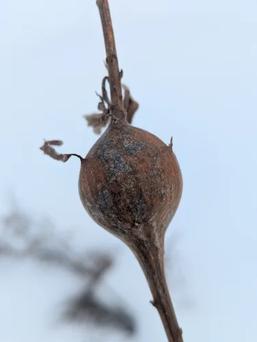

A goldenrod stem bears a single round swelling
The goldenrod gall fly induces its host stem to grow around a developing larva. A round woody swelling can remain conspicuous in winter after leaves and flowers disappear. On a garden goldenrod it is often an opportunity to observe an insect life cycle without removing the whole plant.

Where to look
Find the stem passing straight through a nearly spherical swelling on a goldenrod. Look above the swelling to see whether the shoot continues to grow. Photograph the swelling while it is still attached to its host. A detached round gall loses the clues supplied by its height on the stem, its connection to the shoot and the identity of the surrounding plant.
What confirms it
An older gall can be opened lengthwise to reveal a central chamber. A small fly larva develops inside; some old galls are already empty.
Similar damage
Separate a round stem gall from a leafy rosette at the shoot tip or an elongated spindle-shaped swelling. Goldenrod hosts several different gall makers.
What to do
In a wildlife planting, leaving galls in place preserves food for birds and the insects associated with them. A few galls seldom justify treatment.
Follow-up
Observe the same stems after leaf fall for small emergence holes or larger openings made by birds. The gall itself remains after its occupant is gone.